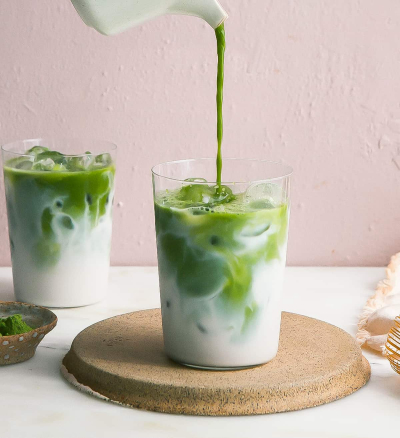

Matcha Latte

This iced matcha latte recipe is one that I created to be
simple enough that anyone can follow along. It's fairly
quick, adaptable, and requires no fancy equipment (my favorite
kind of recipe)! You can use dairy or any milk alternative you
love most, and the matcha powder you use is completely up to you!
Here, we're using oat milk and matcha powder from my local café.
My recipe for simple syrup will also be included here and you can
add any flavoring you like. You are the main character, you are
your own barista, follow your heart with this one, friends!